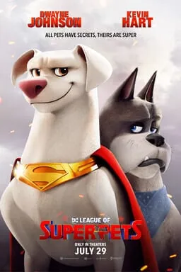

The genetics
Genetics is a minor element. The villain, Lulu, is a guinea pig who was a test subject in Lex Luthor's laboratory, and one review describes her as genetically altered; her resentment of those experiments and her loyalty to Luthor drive her actions. The animals' superpowers, however, come from exposure to orange kryptonite, a fictional mineral, not from genetic engineering. The film is a family comedy about pets and adoption, and it does not explore the science.
The story
In this animated comedy, Krypto, Superman's dog, fights crime in Metropolis with his owner but feels left out as Superman grows closer to Lois Lane. When the Justice League stops Lex Luthor from pulling an orange kryptonite meteor to Earth, a former LexCorp test subject, the guinea pig Lulu, grabs a fragment and gains telekinetic powers; the exposure also gives powers to animals at a shelter: Ace the dog, PB the pig, Merton the turtle and Chip the squirrel. Lulu captures Superman with green kryptonite, and Krypto loses his own powers after eating a shard. With the shelter pets, Krypto tries to stop Lulu, who empowers her own guinea pigs, captures the Justice League and frees Luthor, then turns against him. Krypto regains his powers, the pets rescue the League, and Lulu, after absorbing the kryptonite and becoming a giant monster, is defeated. The pets are adopted by the members of the Justice League.